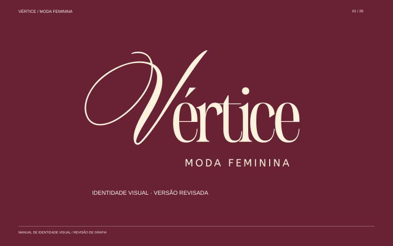

Presença em cada detalhe.
Uma coleção de marca, papelaria e aplicações que traduz a elegância da Vértice em formas, texturas e movimento.
As assinaturas da Vértice.
As três versões aprovadas, preservadas: logotipo vinho, logotipo claro e monograma V.


Uma presença que se sente.
Cartão de visita, papel timbrado e envelope: uma família visual com contrastes, curvas e detalhes de marca.
Cartão de visita
Frente e verso · 90 × 50 mm. Composição assimétrica, contraste vinho e rosa, grafismo caligráfico e contatos editáveis.
Baixar arquivosPapel timbrado
A4 · cabeçalho leve, área de escrita livre e rodapé com grafismo fluido. Campos editáveis.
Baixar arquivos

Envelope comercial
220 × 110 mm · face externa. Arte deve ser aplicada à faca da gráfica; campos editáveis.
Baixar arquivos

Três gestos. A mesma essência.
O traço do monograma, a repetição do V e a fluidez dos tecidos formam um sistema de apoio à identidade.
Grafismo 01 · gesto
Recorte expressivo do monograma. Para cantos, fundos e assinaturas.
Baixar arquivos

Grafismo 02 · trama V
Módulo geométrico em V. Uma textura contínua para papelaria e embalagens.
Baixar arquivos

Grafismo 03 · movimento
Curvas paralelas inspiradas no caimento dos tecidos do manual.
Baixar arquivos

Pequenos formatos. Grande presença.
Circular, horizontal e vertical. Três composições para acompanhar diferentes pontos de contato da marca.
Adesivo circular
Ø 60 mm · selo com monograma e assinatura. Fundo externo transparente.
Baixar arquivos

Adesivo horizontal
120 × 40 mm · fechamento de embalagens com assinatura e recorte caligráfico.
Baixar arquivos

Adesivo vertical
45 × 75 mm · selo alongado com contraste de cores e dois momentos de leitura.
Baixar arquivos

Moda em movimento.
Fotografia editorial, recorte orgânico, tipografia e grafismos em uma composição pensada para a Vértice.
Banner editorial
Composição fotográfica com modelo, curvas de seda, recorte orgânico e hierarquia editorial. 1920 × 1000 px.
Baixar arquivos


A essência,
documentada.
O manual original da Vértice: fundamentos, paleta, tipografia e referências de aplicação reunidos em um só documento.
Baixar manual em PDF ↓O universo Vértice. Completo.
Marca, papelaria, três grafismos, três adesivos, banner e manual original.
Baixar todos os entregáveis ↓Arquivos editáveis e orientações de produção
Os campos de contato da papelaria aguardam os dados reais da loja. Os arquivos SVG permitem edição; os PDFs físicos estão em tamanho final e RGB, sem sangria. Antes da impressão, valide contatos, cores, sangria e faca com a gráfica.
O logotipo aprovado foi preservado em curvas. Os novos textos usam Georgia e Arial como fontes de apoio; os arquivos completos das fontes indicadas no manual não foram fornecidos. A fotografia do banner foi criada com IA para esta composição.
Baixar orientações completas ↓